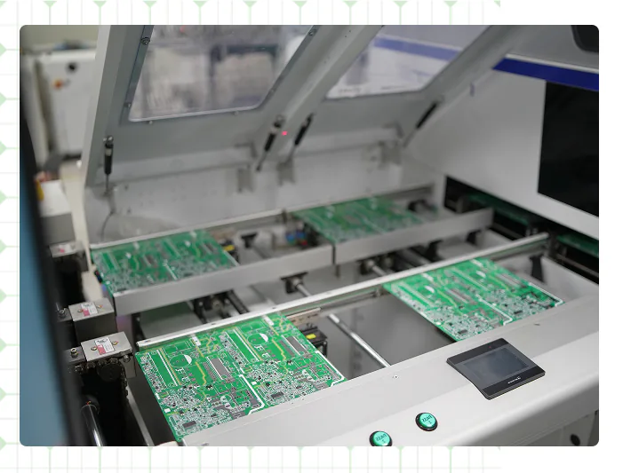
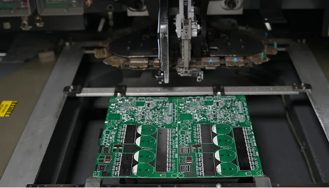
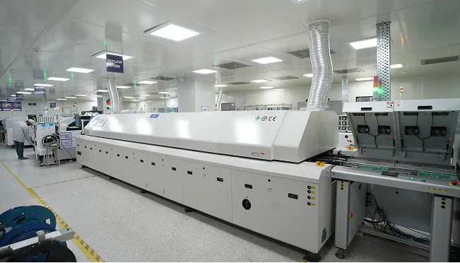

Power Electronics
Backward-integrated electronics for the energy transition

Power Electronics
Eastman is committed to manufacturing high-quality power electronics products for the energy transition. Our manufacturing is supported by a centralized infrastructure that integrates SMT, manual insertion, and semi-knocked-down assembly under one roof.
Along with a fully automated PCB production line, we manufacture home UPS, inverters, solar PCUs and inverters, and e-rickshaw chargers with reliable, efficient, and cost-effective electronics solutions.
1R&D Centre
3Manufacturing Facilities
2 MillionUnits / annum
100%Backward Integration
Products Manufactured
Plant Snapshots
A look inside Eastman's power electronics manufacturing facility.


Plant Certifications
Manufactured to internationally recognised standards for quality, safety and environmental responsibility.
 ISO 9001:2015ISO 14001:2015ISO 45001:2018BIS CertifiedCE Marked
ISO 9001:2015ISO 14001:2015ISO 45001:2018BIS CertifiedCE Marked